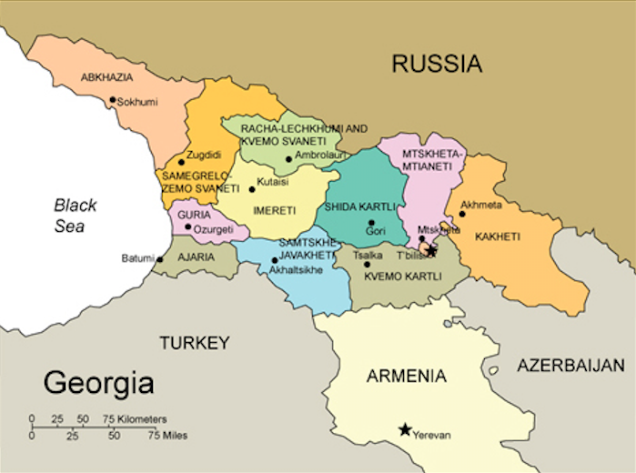

\
(Georgian: საქართველო, romanized: sakartvelo, IPA: [sakʰartʰʷelo] ⓘ) is a transcontinental country in Eastern Europe[10][11][12] and West Asia.
It is part of the Caucasus region, bounded by the Black Sea to the west, Russia to the north and northeast, Turkey to the southwest, Armenia to the south, and Azerbaijan to the southeast.
Georgia covers an area of 69,700 square kilometres (26,900 sq mi).
[13] It has a population of 3.7 million,[b][14] of which over a third live in the capital and largest city, Tbilisi.
Georgians, who are native to the region, constitute a majority of the country's population and are its titular nation.
history of (country) Georgia
The nation of Georgia (Georgian: საქართველო sakartvelo) was first unified as a kingdom under the Bagrationi dynasty by the King Bagrat III of Georgia in the early 11th century, arising from several successor states of the ancient kingdoms of Colchis and Iberia.
The Kingdom of Georgia flourished during the 11th and 12th centuries under rulers such as King David IV the Builder and Queen Tamar the Great. The kingdom fell to the Mongol invasion by 1243, and after a restoration under George V the Brilliant it fell again to the Timurid Empire in 1403.
By 1490, Georgia was fragmented into several petty kingdoms and principalities, which throughout the Early Modern period struggled to maintain their autonomy against Ottoman and Iranian domination until Georgia was finally annexed by the Russian Empire in the 19th century.
After a brief period of independence as Democratic Republic of Georgia, the country soon ended up being a Soviet Republic until the dissolution of the Soviet Union. The current republic of Georgia has been independent since 1991.